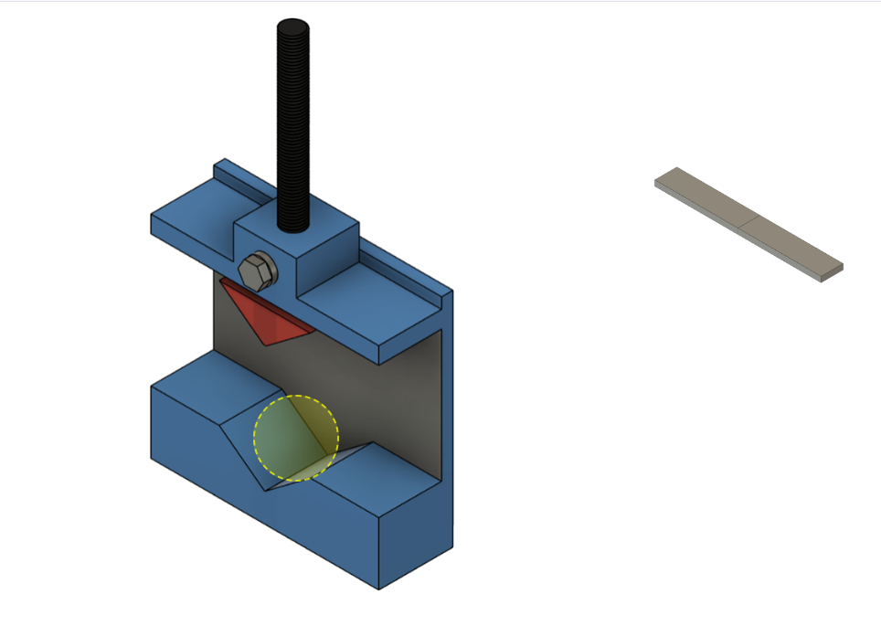
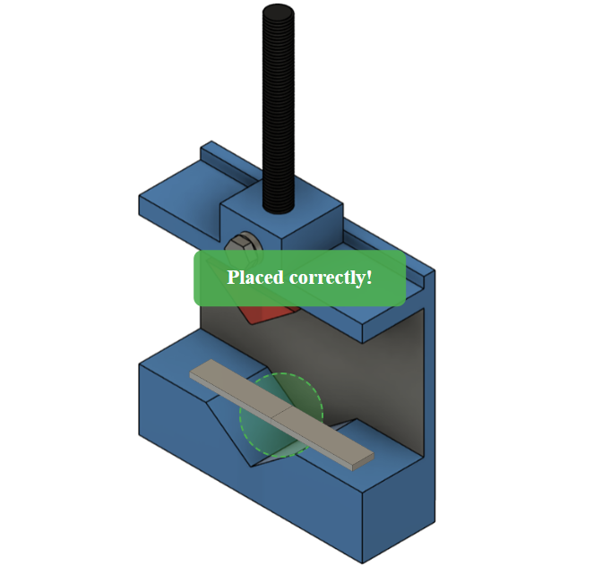
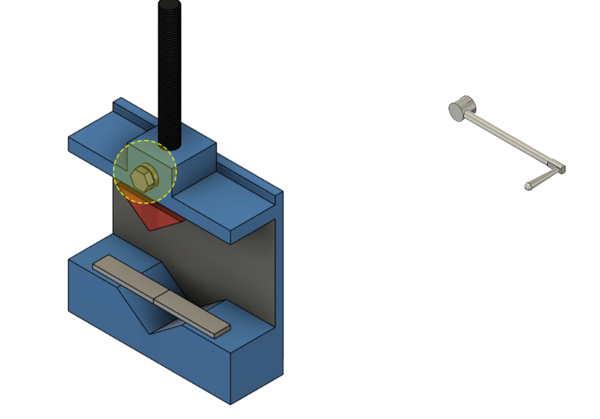
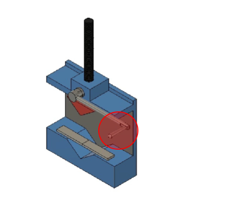
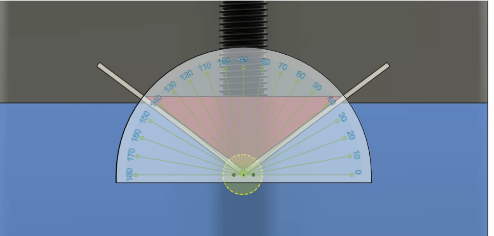
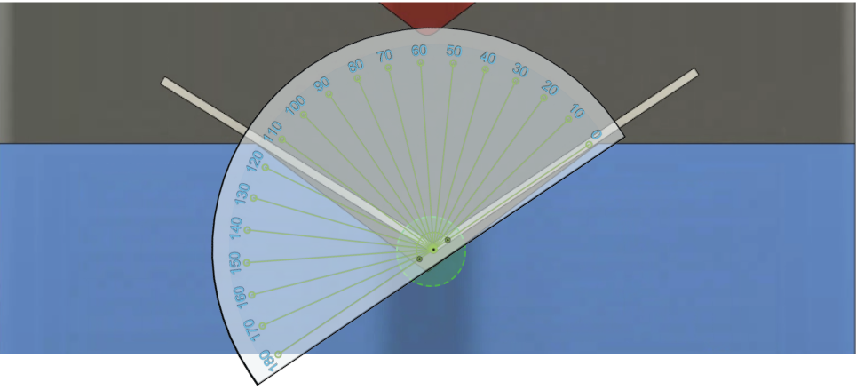
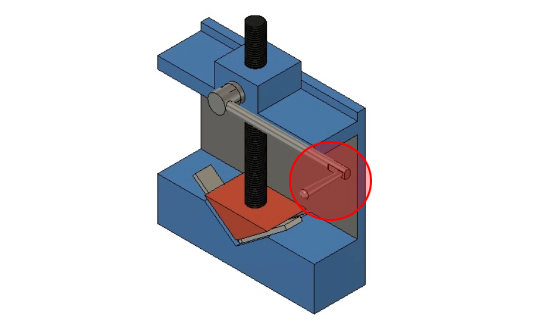
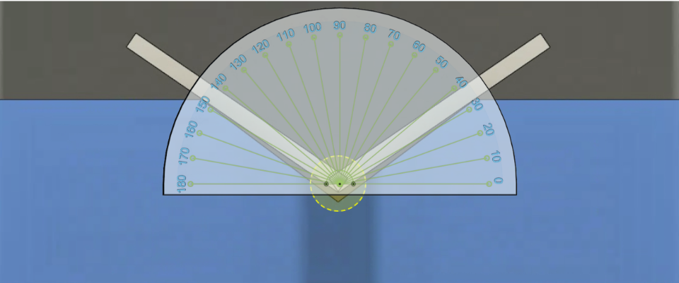
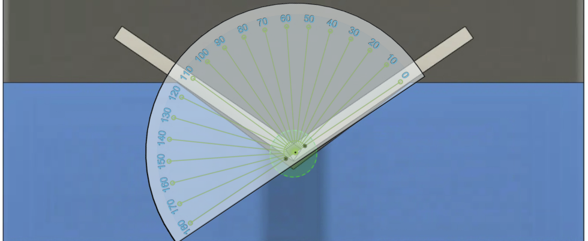

Procedure
Select the required material (Aluminium, Brass, or Stainless Steel) and choose the thickness (2 mm or 5 mm). The selection is confirmed through the green status bar. The schematic top and side view of the metal strip is displayed to understand the geometry and dimensions. Measure equal distances of 60 mm from both ends and mark the midpoint for bending reference. Drag the workpiece into the highlighted yellow dotted region on the V-shaped lower die.  The workpiece lies across the die within the green area and the message “Placed correctly!” appears.  Drag the handle and align it with the screw head inside the yellow dotted region.  The handle snaps into position forming the complete lever mechanism. The confirmation message appears. Click the highlighted red area on the handle to initiate the downward movement of the punch.  Align the protractor with the bent workpiece to measure the angle while the punch is still applying force.  After releasing the load, measure the relaxed angle using the protractor to observe the spring-back effect.  Click the handle again to move the punch upward and remove the applied force.  Align the protractor to measure the bend angle immediately after unloading.  Allow the sheet to fully relax and measure the final angle to evaluate the spring-back effect. Step 1: Material and thickness selection
Step 2: Viewing the schematic diagram

Step 3: Marking the center of the specimen

Step 4(i): Placing the workpiece on the die
Step 4(ii): Workpiece positioned correctly
Step 5(i): Attaching the handle to the screw
Step 5(ii): Handle attached successfully

Step 6(i): Starting the bending operation
Step 6(ii): Measuring bend angle before release
Step 6(iii): Final bend angle and spring-back
Step 7(i): Removing the punch
Step 7(ii): Measuring bend angle after punch removal
Step 7(iii): Measuring final bend angle (spring-back)